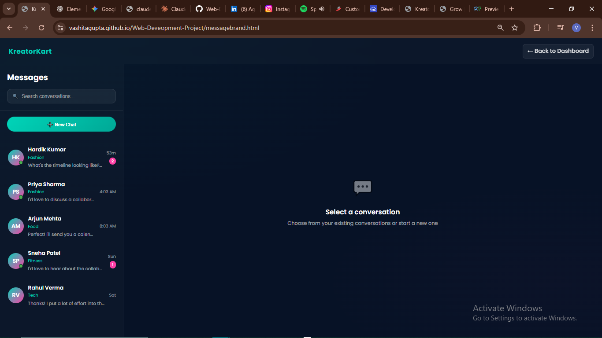
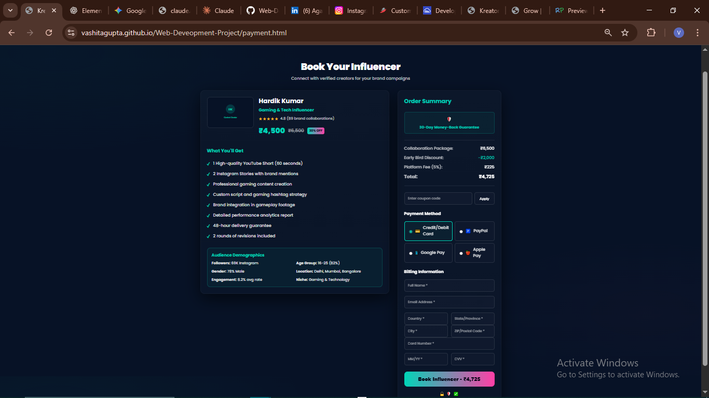

Picture this… you’re a small startup with a brilliant product, but your marketing budget is… well, let’s just say it’s not touching celebrity influencers anytime soon. You know influencer marketing works — people trust real faces over flashy ads — but finding the right creator? It’s like walking into the world’s biggest flea market. Messy, noisy, and honestly… a little overwhelming.
Now flip the script. You’re a micro-influencer. You’ve got loyal followers, you create amazing content… but brand deals? Either they never come, or they come as vague DMs with zero clarity, and rates that make you wonder if you’re being underpaid — or overquoted.
Both sides are frustrated. Both are losing opportunities.
That’s why we built KreatorKart.
We’re not just another directory. We’re the bridge — the matchmaking space — where startups find creators who fit their budget and vision, and creators finally get discovered for the value they bring.
For startups, it’s walking into a clean, organized store where every influencer profile shows pricing, stats, and niche in one place.
For influencers, it’s your personal showroom — where brands come to you, already knowing your worth.
KreatorKart was born from a shared frustration, but it’s fueled by a shared dream — to make influencer-brand collaborations simple, transparent, and rewarding for both sides.
1. Logo (KreatorKart):
The logo is placed at the top-left for quick brand recognition. The green color pops against the dark background, symbolizing growth, trust, and creativity.
2. Headline & CTA Buttons:
The bold headline clearly explains what the platform does. Two buttons — one for influencers and one for brands — guide visitors straight to their relevant action.
3. Hero Illustration:
The main image uses purple and blue tones to represent creativity, trust, and modern technology. It makes the homepage feel friendly and engaging.
4. Highlights Section:
Three cards present the main features — onboarding, smart matching, and transparent pricing — in a quick, scannable way so users understand the benefits fast.
5. Testimonials:
User quotes with names and photos add authenticity and show that real people trust the platform.
6. Contact Section:
A simple form lets users send messages easily, while email, phone, and office address give other contact options.
7. Footer:
Contains copyright details and essential links, designed to be minimal so it doesn’t distract from the main content.
8. Navigation Link:
An “About Us” link in the top-right makes it easy for visitors to learn more about the brand.
About Us Page
1. About Us Heading:
Sets the tone instantly, letting visitors know exactly where they are. The large, bold text stands out strongly against the dark background, ensuring it’s unmissable.
2. Who We Are:
A concise introduction that builds credibility and connects the brand to its audience. It’s placed prominently so users understand your identity right away.
3. Our Mission:
Communicates the core driving force behind your work. The fade-up effect gives it emphasis, making it feel important and inspiring.
4. Our Story:
Creates a personal connection by sharing your journey. The darker layout makes imagery and text appear more vivid, helping visitors engage emotionally.
5. What We Offer:
Highlights your services and solutions clearly. The staggered animation makes each offering feel like a reveal, increasing curiosity and retention.
6. Why It Matters:
Explains the relevance of your work in a broader context. Its placement in the middle keeps the narrative flowing logically.
7. Our Values:
Reinforces brand personality and ethics, attracting like-minded visitors. Bright icons or highlights against the dark background ensure each value is memorable.
8. Call to Action:
High-contrast button grabs attention and drives immediate engagement. The animation subtly encourages clicks without feeling intrusive.
9.Office Location:
Adds authenticity by showing your physical presence. The simple, clean design fits the overall professional tone while making contact easy.
Dashboard
1. Search Bar: Allows users to quickly find influencers by name, domain, or location for ease of navigation.
2. Sort Dropdown: Enables users to sort influencer listings by relevance or other criteria to find the best match.
3. Age Range Slider: Filters influencers by age group to target specific demographics.
4. Domain Filters (Checkboxes): Multi-select options allow users to filter influencers by industry or interest area.
5. Price Range Slider: Lets users filter influencers by their price per video to fit different budget ranges.
6. Instagram Followers Checkboxes: Allows filtering influencers based on follower count to assess influencer reach.
7. Location Filters: Filters influencers based on geographical location to target specific markets.
8. Instagram Followers Count (Per Influencer Card): Displays influencer's Instagram reach, a key metric for users evaluating influence.
9. LinkedIn Followers Count (Per Influencer Card): Shows LinkedIn reach, indicating professional influence and credibility.
10. Contact and Pay Now Buttons: Call-to-action buttons for direct engagement or payment facilitate quick decision-making.
11. Tooltip Popup: Provides quick access to key influencer info on hover without cluttering the card.
Messages
1.Search Conversations Bar: Allows quick filtering of conversations, saving time when locating specific chats.
Placed at the top for immediate visibility, with a clean rectangular field and subtle contrast for focus.
2.New Chat Button: Gives users an instant way to start fresh conversations without navigating elsewhere.
Bright gradient green color and rounded shape make it stand out against the dark background.
3.Conversation List with Avatars & Status Indicators: Displays name, category, and last message snippet for easy recognition of chats.
Circular avatars with gradient backgrounds and small online status dots enhance recognition and modern aesthetics.
4.Unread Message Badges: Notifies users of pending messages, prioritizing engagement with active conversations.
Small, high-contrast pink circles make unread counts immediately noticeable without clutter.
5.Selected Conversation Prompt: Guides users to select a conversation when none is open, reducing confusion.
Minimal grey icon and text keep the area clean and avoid distraction when no chat is active.
6.Two-Panel Layout: Keeps the conversation list always visible while viewing or starting new chats.
Split-screen design with a clear divider ensures logical grouping and easy navigation.

Payment

Page Title – “Book Your Influencer”: Clearly communicates the primary action of the page and sets context for users.
Large bold font with white text against a dark background for maximum contrast and easy visibility.
Influencer Card (Left Section): Provides influencer name, niche, rating, and pricing details to help users make an informed choice.
Card layout with padding, dark background, and rounded corners for a clean, modern feel that separates it from the background.
“What You’ll Get” List: Lists deliverables so users know exactly what they’re purchasing.
Green checkmarks for positive reinforcement and teal text for readability without harsh brightness.
Audience Demographics Box: Gives audience statistics (followers, gender split, engagement rate) to evaluate influencer relevance.
Teal box with slight glow to draw attention while keeping harmony with the color theme.
Order Summary Card (Right Section): Summarizes total costs and savings to promote transparency.
Compact layout with clear separation of price details using color-coded discounts and totals.
Payment Method Options: Allows users to choose their preferred transaction mode quickly.
Icon-based buttons for instant recognition and hover effects to signal interactivity.
Billing Information Form: Captures essential customer details for processing payment.
Minimal, clean input fields with consistent spacing to maintain readability and reduce cognitive load.
“Book Influencer” Button: Final call-to-action for confirming purchase.
Bright pink background to stand out from the dark UI, with bold text for visibility.
WBD Project Requirements
📋 Project Setup & Documentation
Table with team number, member names, roll numbers
Stakeholders listed
Submission: Complete & submit before deadline
🏗️ Core Technical Requirements
Stack: Use HTML, CSS, JavaScript
Page Count: 5–6 main pages
Semantic HTML: Use <header>, <footer>, <nav>, etc.